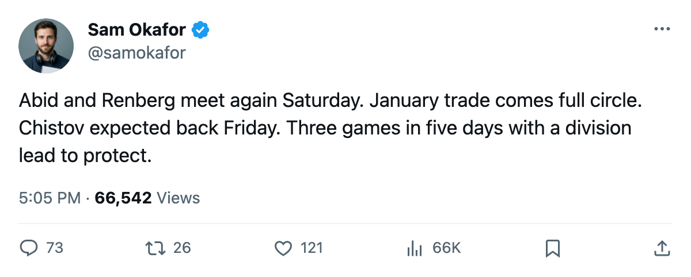

TOR
TORWeek Ahead: Abid and Renberg meet the clubs that traded them Saturday, then New York visits Tuesday
The January trade comes full circle at the ACC, Pittsburgh arrives missing 3 forwards, and Chistov's return reshapes the lineup.
 Sam OkaforLeafs beat reporter · Queen City Telegram
Sam OkaforLeafs beat reporter · Queen City Telegram
 Pittsburgh Penguins visits the Air Canada Centre on Saturday, December 10, for the third meeting of a season series tied 1-1 with Toronto outscoring Pittsburgh 5-3 across two games.
Pittsburgh Penguins visits the Air Canada Centre on Saturday, December 10, for the third meeting of a season series tied 1-1 with Toronto outscoring Pittsburgh 5-3 across two games.
 Ramzi Abid80 crossed from Pittsburgh to Toronto on January 25.
Ramzi Abid80 crossed from Pittsburgh to Toronto on January 25.  Mikael Renberg73 crossed in the other direction on the same date. They meet again Saturday for the first time since the October matchup that opened this season's series.
Mikael Renberg73 crossed in the other direction on the same date. They meet again Saturday for the first time since the October matchup that opened this season's series.
Pittsburgh sits 9-6-4 through 25 games with 34 points, on a 1-game losing streak. The Penguins carry 3 men on the injured list: Rico Fata70 (abdomen, out until January 12), and two others. Fata's absence thins a top 6 that has generated 71 goals in 25 games.
Chistov back in the mix
 Stanislav Chistov87 is expected back from a leg injury on Friday, December 9, putting him in range for Saturday's lineup. He carries +8 on the Bureau's Development Index (78 base, 87 overall), 10 goals and 17 points in 27 games. His return should slot him back into the top 6 at left wing, moving
Stanislav Chistov87 is expected back from a leg injury on Friday, December 9, putting him in range for Saturday's lineup. He carries +8 on the Bureau's Development Index (78 base, 87 overall), 10 goals and 17 points in 27 games. His return should slot him back into the top 6 at left wing, moving  Rick Nash85 to a checking role and freeing
Rick Nash85 to a checking role and freeing  Brad Richards87 from line-sharing.
Brad Richards87 from line-sharing.
The rest of the week
Tuesday brings  Philadelphia Flyers on the road. Philadelphia is 10-10-2 with 28 points, on a 2-game winning streak. The Flyers lost
Philadelphia Flyers on the road. Philadelphia is 10-10-2 with 28 points, on a 2-game winning streak. The Flyers lost  Marco Sturm85 (leg, out until December 30) and
Marco Sturm85 (leg, out until December 30) and  Chris Therien73 (foot, out until December 29) in the last two weeks.
Chris Therien73 (foot, out until December 29) in the last two weeks.
Thursday is  New York Rangers at the ACC. New York leads the Atlantic Division at 14-6-5 with 43 points through 30 games. Two more reunions land that night:
New York Rangers at the ACC. New York leads the Atlantic Division at 14-6-5 with 43 points through 30 games. Two more reunions land that night:  Kenny Jonsson74 meets his old club for the first time, and
Kenny Jonsson74 meets his old club for the first time, and  Jamie Lundmark81 meets the Rangers, the club he left on May 31.
Jamie Lundmark81 meets the Rangers, the club he left on May 31.
The full slate for Toronto over the next seven days:
| Date | Opponent | Location | Notes |
|---|---|---|---|
| Dec 10 | PIT | Home | Abid/Renberg reunion, Chistov returns |
| Dec 12 | PHI | Away | Flyers missing Sturm, Therien |
| Dec 14 | NYR | Home | Jonsson and Lundmark vs their old clubs |
